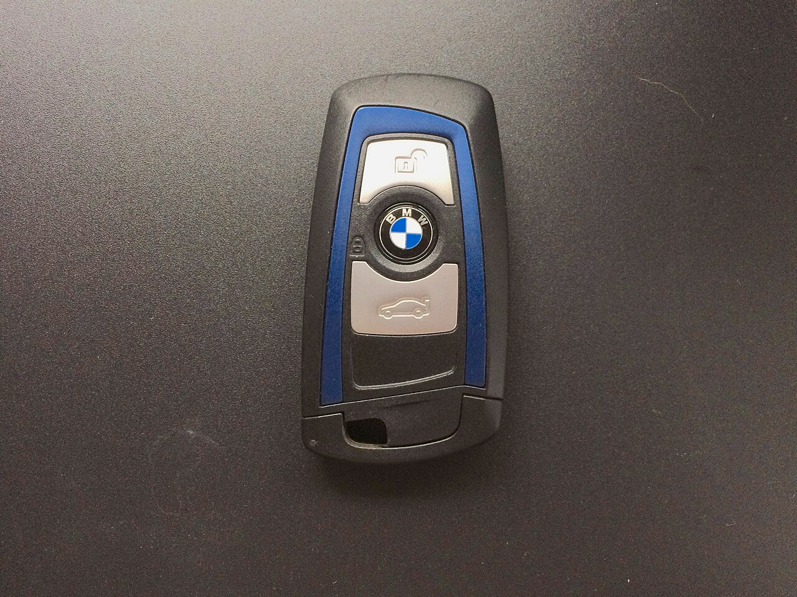

Remote Start: The Mistakes That Waste Gas and Wear Your Engine
Remote start is wonderful when you use it right — and a gas-wasting engine-wearer when you don't.

Photo: Adder3824, CC BY-SA 4.0, via Wikimedia Commons

Remote start is one of the great winter luxuries: press a button from inside, walk out to a warm car with clear glass. It's also one of the easiest ways to waste gas and wear your engine, because the temptation is to start it earlier and earlier — fifteen minutes, twenty minutes, half an hour before you leave. A warm cabin is worth something. But the cost of a long remote-start idle is real, and most of it buys you nothing.
Why it's wrong
A cold engine at idle runs rich, dumping extra fuel into the cylinders. Some of that fuel washes past the piston rings and dilutes the oil, which means the oil protects the engine less well. An engine warms up far more slowly at idle than it does driving gently, so a fifteen-minute idle gets the engine barely warmer than a two-minute one — while burning several times the fuel. Add it up over a winter of twice-daily long idles and you've burned a meaningful amount of gas for a cabin that was warm after five minutes anyway. And remote starting in an attached garage — even with the door open — is dangerous: exhaust fumes, including carbon monoxide, can seep into the house.
The right way
- Keep it short: two to five minutes is enough. That's enough to take the edge off the cabin and start loosening the ice on the glass. Any longer and you're burning fuel for comfort you already have.
- Start it when you're nearly ready to leave, not when you wake up. Hit the button as you put your coat on, not as you sit down to breakfast.
- Let the defroster do the ice work. Set the heat and defroster before you shut the car off the night before, so the remote start puts warm air on the windshield immediately.
- Never remote start in a closed or attached garage. Carbon monoxide is colourless and odourless, and a running car in an enclosed space is a genuine danger. Outdoors only.
- Drive gently for the first few minutes anyway. Remote start doesn't warm the transmission, the wheel bearings, or the steering. Easy throttle until the temperature gauge moves.
- Use a block heater on the coldest nights instead. For genuinely brutal mornings, a block heater on a timer does more for the engine than any amount of idling — and uses less energy.
- Check the run time setting. Many remote start systems let you set the idle duration. If yours defaults to fifteen minutes, turn it down.
The rundown
Two to five minutes, outdoors only, started when you're nearly ready — that's remote start done right. The car will be warm, the glass will be clearing, and you won't have burned a tank of gas over the winter just to sit in a warm seat. Comfort is fine. Waste is a choice.
← Back to the battery care guide